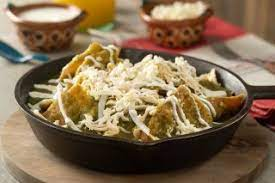

Chilaquiles verdes

Ingredientes
Dos jitomates, previamente picada
Seis chiles de árbol secos
Una cebolla, previamente picada
Dos dientes de ajo, picados
Sal al gusto (de la que se come, ¡no que te salgas de tu casa!)